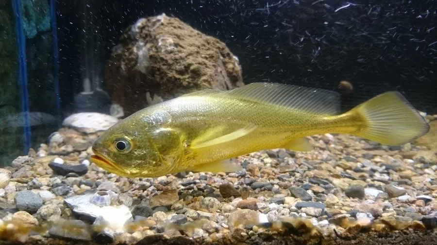

鱼类 · 动物界
大黄鱼 Larimichthys crocea

中国近海传统的四大海产之一，体色金黄、鳔能发声，因过度捕捞野生资源极度衰退，如今市场供应主要依靠养殖。
- 分类
- 门脊索动物门纲硬骨鱼纲目鲈形目科石首鱼科属黄鱼属
- 栖息环境
- 中国近岸水深 10–60 m 的泥沙底质海域，春季洄游到近岸产卵
- 地理分布
- 中国黄海、东海和南海近岸，以及朝鲜半岛西南部海域
- 保护级别
- IUCN 极危（CR）；中国未列入国家重点保护野生动物名录（已实施渔业管理）
物种志
大黄鱼体呈长椭圆形、侧扁，头大，口大，下颌稍向前突出。体色金黄，背部灰黄，腹部金黄，各鳍黄色，通体呈现出温暖的金黄色调，因此得名。成鱼体长一般 30–50 cm，体重 0.5–2 kg，最大可超过 80 cm、体重 5 kg 以上。
大黄鱼分布于中国黄海、东海和南海的近岸海域以及朝鲜半岛西南部，是暖温性近海鱼类，栖息于水深 10–60 m 的泥沙底质海域。它是肉食性鱼类，捕食小鱼、虾蟹和头足类；繁殖期在春季，鱼群会洄游到近岸产卵场。大黄鱼的鳔能发出“咕咕”的声音，过去渔民靠听声音判断鱼群位置，因此石首鱼科也被称为“会唱歌的鱼”。大黄鱼曾是中国四大海产之一，20 世纪 70 年代起因过度捕捞，野生资源急剧衰退，IUCN 将其评为极危。中国未将其列入国家重点保护野生动物名录，但已实行禁渔期和增殖放流等管理措施，目前市场上销售的大黄鱼多为养殖产品。
形态与习性
- 食性肉食性，捕食小鱼、虾蟹和头足类
- 体长一般 30–50 cm，最大可超过 80 cm
- 体重常见 0.5–2 kg，最大可超过 5 kg
- 繁殖春季洄游到近岸产卵场产卵
- 发声鳔能发出“咕咕”声，过去渔民靠听声寻找鱼群
- 现状野生资源极度衰退，市场供应主要依靠养殖
趣味知识
- 大黄鱼的鳔能发出咕咕声，过去渔民靠听声音寻找鱼群。
- 它是中国传统的“四大海产”之一，野生资源曾因过度捕捞急剧衰退。
- 如今餐桌上的大黄鱼大多来自养殖，野生大黄鱼已十分稀少。